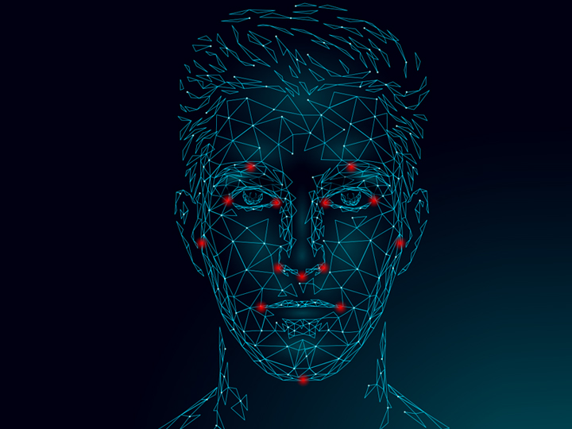
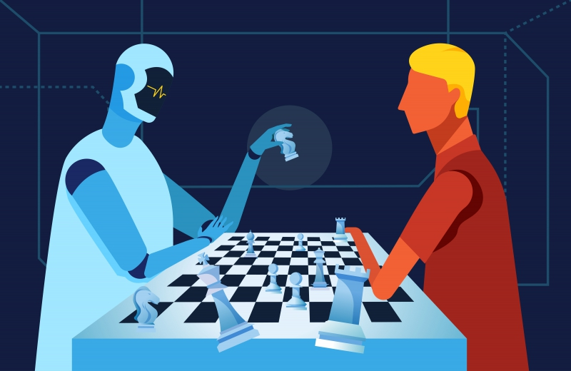
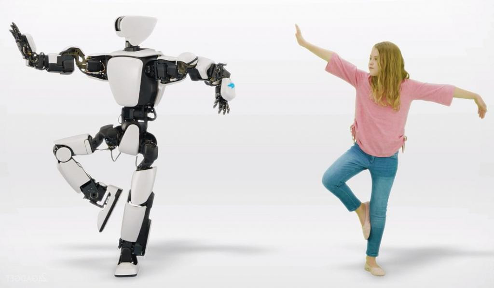

Исследователи нашли алгоритм черного ящика, который помог в прогнозировании смерти пациента лучше, чем люди. Это было сделано с помощью результатов ЭКГ из архивных данных о пациентах.
Примеры использования технологий искусственного интеллекта
ИИ может распознавать лица
Всеми любимый и популярный — iPhone 12 – в нем распознается лицо благодаря нейросетям (вариации системы ИИ). Они выполняют примерно 60 млрд операций\сек., анализируя практически 40 тыс. ключевых точек на лице для опознавания хозяина гаджета. И даже маскировка в виде очков не станет преградой, так как анализируется область от виска до виска и от каждого виска до точки под нижней губой.

ИИ экономит энергию
Опять поставим в пример iPhone 12, который отслеживает активность приложений на смартфоне и датчик движений, чтобы узнать распорядок дня владельца, а после получения информации поступит предложение обновиться в самое удобное для человека время.
ИИ способен на создание картин
Система исследователей из Нью-Джерси в совместном проекте с лабораторией AI в Лос-Анджелесе продемонстрировала миру уникальный художественный стиль, а Microsoft способен распознать по речи человека, что он хотел бы нарисовать, и воспроизвести это на экране.
ИИ способен на написание музыки
ИИ Amper сочинил, продюсировал и исполнил музыку для альбома «I AM AI» (англ. я — искусственный интеллект) совместно с певицей Тэрин Саузерн в 2018-ом году.
Amper появился под чутким руководством настоящих профессионалов и музыкальных талантов, он создавался для продвижения творческого процесса. Его уникальная способность – создание музыки за считанные секунды.
Amper самостоятельно подобрал аккордовые структуры и инструментал в треке «Break Free», а специалистам лишь оставалось поправить общие ритм и стиль.
ИИ способен создавать тексты.
Увы, скоро и писательский труд может быть забыт, ведь ИИ способен написать книгу. Система Dewey была заполнена книгами библиотеки проекта «Гутенберг», научными текстами из Google Scholar, а также ей предоставили важные критерии, какой должны быть книга.
Dewey практически справился с задачей, книга была создана, сюжет был о паре, не имеющей возможностей быть вместе. Проблемы заключались в странных именах героев и еще в некоторых деталях. Но ведь это лишь начальные ступени к вершине технологий.
ИИ способен на игры в шахматы
ИИ Deep Blue в первом матче проиграл Гарри Каспарову со счётом 2-4, а во втором – выиграл с результатом 3.5- 2.5.
А новая система AlphaZero до турнира обладала знаниями о том, как ходят фигуры и какая цель у игры, при этом спустя 4 часа она уже одержала победу над лучшей программой по игре в шахматы, над Stockfish 8.

AlphaZero имела возможность обработки до 800 тысяч позиций\в сек., если перевести это в более понятную людям плоскость, то это сравнимо с игрой в шахматы общей сложностью в 1400 лет. Это была абсолютная победа среди компьютеров по шахматам.
ИИ в медицине
Данная отрасль не стала исключением, и вот не так давно в Китае произошел уникальный случай – интеллектуальный робот Xiaoyi сдал все экзамены и стал квалифицированным медицинским специалистом, с лицензией и разрешением на практику.
Разработка компании iFlytek тоже уникальна, потому как способна на анализ всей информации о пациенте, выполняя роль врача-ассистента, для повышения качества работы настоящих врачей. Разработку планируют внедрить в качестве врачей общей практики в отдаленных деревнях Китая, где такая служба остро необходима людям.
ИИ и имитация человека
Человеческая мимика поддалась ИИ, теперь они умеют ее имитировать. Facebook* AI lab имеет робота, который был обучен с помощью звонков в Скайп. Он изучил 68 точек на лице человека, понял, как кивают, моргают и прочее. Теперь он может давать реакцию на информацию, которую он получит от человека, будь она словесной или передана без слов, с помощью мимики.
Moral Machine, созданная американскими учеными из Массачусетского технологического института, пошла еще глубже – система имеет мораль.

Обучение происходило таким образом: на сайте людям нужно было принять решение в какой-то критической ситуации, к примеру, быть машинистом, который выберет один путь и собьет несколько людей на железной дороге, или выберет другой, что повлечет к смерти людей в составе. Moral Machine обучили принимать сложные решения, нарушающие закон робототехники, говорящий, что робот не может принести вред человеку.
Чем закончится такое обучение машин – не ясно. Некоторые думают, что скоро ИИ станет полноправным членом общества, ведь уже сейчас робот София гонконгской компании имеет гражданство в Саудовской Аравии, а некоторые женщины – не имеют!
ИИ в биржевой торговле
Немецкие ученые разработали алгоритмы, которые используют данные рынков из архивов для тиражирования инвестиций в реальном времени. Такая разработка позволила обеспечить 73% возврата инвестиций ежегодно с 1992 по 2015 год, что можно сопоставить с реальной рыночной доходностью на уровне в 9% в год. А в 2000 и 2008 годах и вовсе поставила рекорд — 545% и 681% соответственно.
В 2004 году Goldman Sachs запустил торговую платформу Kensho на базе искусственного интеллекта. На криптовалютных рынках также появляются системы на базе ИИ для торговли на биржах – Mirocana и т.д. Они превосходят трейдеров, поскольку не зависят от эмоций, их опора – четкий анализ и строгие правила.